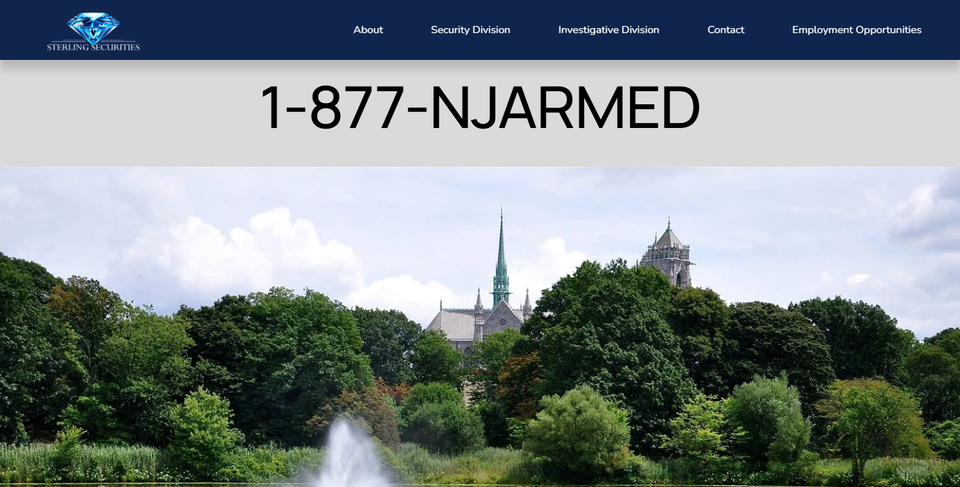
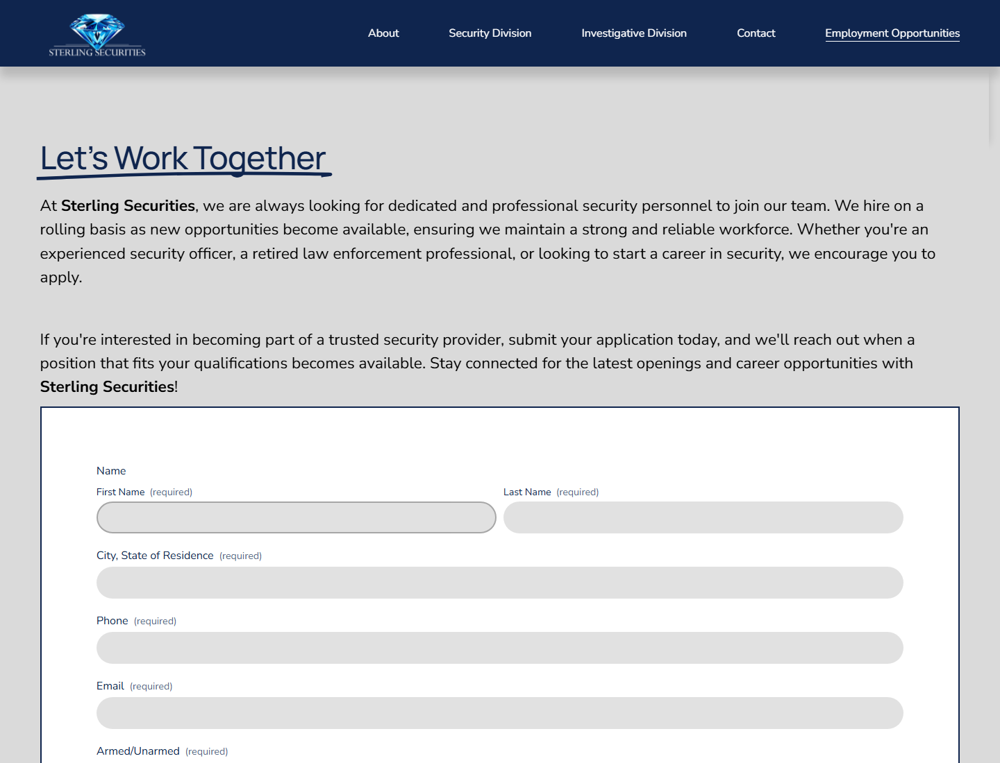

Sterling Securities Website
2025Skills: Squarespace · Web Design · Branding · Content Strategy
The challenge: Sterling's previous website was dated and static. It listed an Employment page in the nav, but there was no way to collect applications online or review submissions — hiring relied on phone calls and scattered email attachments.
What I did: Redesigned and rebuilt sterlingsecurityguards.com on Squarespace — modern homepage, service sections, and a dedicated Employment Opportunities page with an application form (resume upload, contact info, armed/unarmed status, and more).
Employment applications: Submissions now go directly into Squarespace, where leadership can review applicants in one place. That workflow never existed on the old site — the Employment link was there, but it didn't capture or organize applications.
Outcome: A mobile-friendly public site that presents Sterling's services clearly, routes consultation requests, and gives hiring a structured pipeline for new guard applications.
View live site — sterlingsecurityguards.com ↗
Before & After

Employment applications
